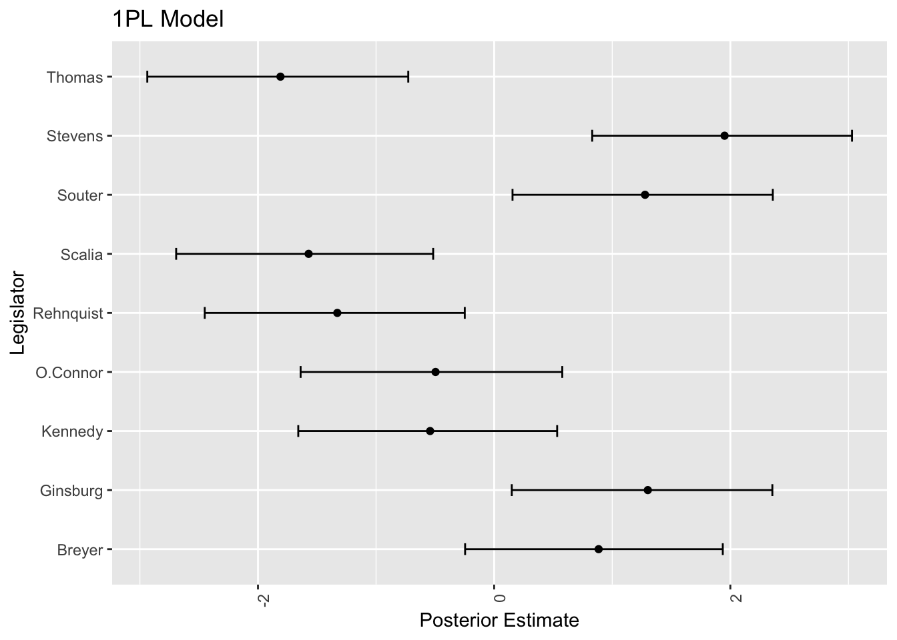
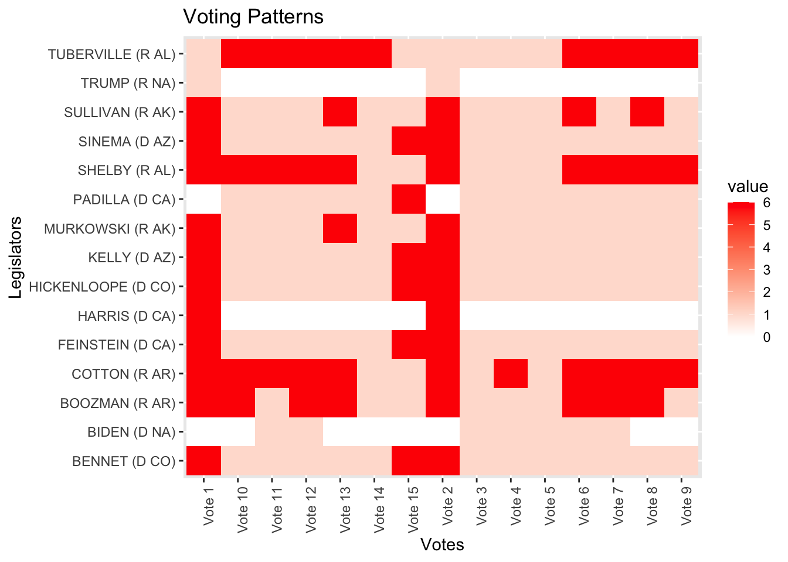
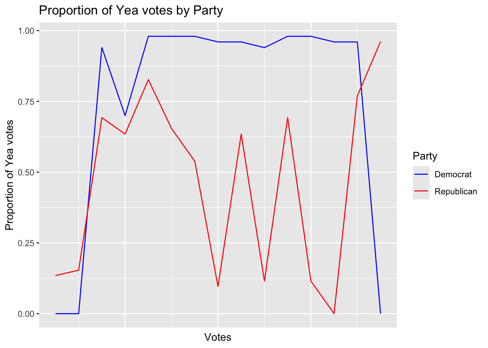

理想点解析・多次元展開法・項目応答理論
空間モデルの特定を目指して
Bayesian
Statistics
2024-07-16
政治学における理想点解析とは，項目反応モデルを用いて裁判官や国会議員などの価値判断基準や「イデオロギー」を定量化・視覚化する方法である． ここでは既存のパッケージを用いて簡単に理想点解析を行う方法から始め， 自分で Stan コードを書いてモデルを推定する方法を紹介する． その際に最も重要な理想点モデルの性質として，識別可能性 の議論がある． これが保たれていないと，モデルの事後分布は多峰性を持ってしまい，推定をするたびに結果が異なったり，統計量の長期間平均が \(0\) になってしまったりしてしまう．
A Blog Entry on Bayesian Computation by an Applied Mathematician
$$
$$
本稿では実際に理想点モデルの推定を，Martin-Quinn により公開されている連邦最高裁判所の 1937 年から 2022 年までのデータを（MCMCpack パッケージを通じて）用いて行う．
library(MCMCpack)
data(Rehnquist) # MCMCpackに含まれる U.S. Supreme Court（連邦最高裁）のデータ
kable(head(Rehnquist))| Rehnquist | Stevens | O.Connor | Scalia | Kennedy | Souter | Thomas | Ginsburg | Breyer | term | time |
|---|---|---|---|---|---|---|---|---|---|---|
| 0 | 1 | 0 | 0 | 1 | 1 | 0 | 1 | 1 | 1994 | 1 |
| 1 | 1 | 1 | 0 | 1 | 1 | 0 | 1 | 1 | 1994 | 1 |
| 0 | 1 | 0 | 0 | 0 | 0 | 0 | NA | 0 | 1994 | 1 |
| 0 | 1 | 0 | 1 | 1 | 1 | 0 | 1 | 0 | 1994 | 1 |
| 0 | 1 | 0 | 0 | 0 | 0 | 0 | 0 | 0 | 1994 | 1 |
| 0 | 1 | 0 | 0 | 0 | 1 | 0 | 0 | 0 | 1994 | 1 |
このデータは保守的な判断をする場合が \(y_i=1\)，リベラルな判断をする場合が \(y_i=0\) の２値データとなっている．
MCMCpack パッケージはじめに，理想点モデルではどのようなことができるかをみるために，MCMCpack パッケージを通じて理想点推定を簡単に実行する方法を見る．
理想点モデルでは識別性が一つの論点になる（第 2.5 節）が，ここでは簡単に，Stevens 判事と Thomas 判事の位置を固定する方法を用いてみよう．
MCMCpack パッケージでは，時系列理想点モデルの推定に MCMCdynamicIRT1d() 関数が用意されている．
# 初期値の設定
theta.start <- rep(0, 9) # 9人の裁判官の初期値
theta.start[2] <- -3 # Stevens裁判官の初期値
theta.start[7] <- 2 # Thomas裁判官の初期値
# MCMCの実行
out <- MCMCdynamicIRT1d(
t(Rehnquist[,1:9]), # データ行列（転置して裁判官×案件の形に）
item.time.map=Rehnquist$time, # 各案件の時期情報
theta.start=theta.start, # 初期値
mcmc=2000, # MCMCの反復回数
burnin=2000, # バーンイン期間
thin=5, # 間引き数
verbose=500, # 進捗表示間隔
tau2.start=rep(0.1, 9), # τ²の初期値
e0=0, E0=1, # θの事前分布パラメータ
a0=0, A0=1, # αの事前分布パラメータ
b0=0, B0=1, # βの事前分布パラメータ
c0=-1, d0=-1, # τ²の事前分布パラメータ
store.item=FALSE, # アイテムパラメータを保存しない
theta.constraints=list(Stevens="-", Thomas="+") # 識別制約
)
theta_cols <- grep("theta", colnames(out), value=TRUE)
theta_mcmc <- out[, theta_cols]
# library(coda)
# summary(theta_mcmc) # codaのsummary関数で要約
plot(theta_mcmc)
出力は各最高裁判事の理想点の事後分布である．
theta_means <- colMeans(theta_mcmc)
pattern <- "t11"
col_names <- colnames(theta_mcmc)
selected_cols <- grep(pattern, col_names) # 正規表現にマッチする列のインデックスを取得
selected_theta_mcmc <- theta_mcmc[, selected_cols]
quantiles_2_5 <- apply(selected_theta_mcmc, 2, function(x) quantile(x, 0.025))
quantiles_97_5 <- apply(selected_theta_mcmc, 2, function(x) quantile(x, 0.975))
ggplot(data.frame(
legislator = colnames(Rehnquist)[1:9],
mean = unname(theta_means[selected_cols]),
lower = unname(quantiles_2_5),
upper = unname(quantiles_97_5)
), aes(x = mean, y = legislator)) +
geom_point() +
geom_errorbar(aes(xmin = lower, xmax = upper), width = 0.2) +
theme(axis.text.x = element_text(angle = 90, hjust = 1)) +
labs(title = "Estimated Ideal Points (11th term)", x = "Ideal Point", y = "Legislator")
(Martin and Quinn, 2002) ではこの理想点の時系列的な変化を調べた．
time_points <- unique(Rehnquist$time)
n_subjects <- 9 # 裁判官の数
# 各裁判官の軌跡をプロット
plot(time_points, theta_means[1:length(time_points)],
type="l", ylim=range(theta_means),
xlab="Time", ylab="Ideal Point",
main="Estimated Ideal Points Over Time")
# 各裁判官を異なる色で追加
colors <- rainbow(n_subjects)
colors[9] <- "blue"
for(i in c(1,8,9)) {
lines(time_points,
theta_means[((i-1)*length(time_points)+1):(i*length(time_points))],
col=colors[i],
lwd=3)
}
# 凡例を追加
legend("topright",
legend=unique(colnames(Rehnquist)[c(1,8,9)]), # 裁判官の名前
col=colors[c(1,8,9)],
lty=1)
たしかに William Rehnquist は共和党，Ruth Bader Ginsburg と Stephen Breyer は民主党である．
\(0\) の上に位置している Anthony Kennedy や Sandra Day O’Connor はほとんど中道的だが，やや保守党寄りである． Antonin Scalia は特に保守的な立場であることが知られている．
\(0\) よりも下に位置するもう一人は David Souter であるが，彼はもともと保守系と目されていたが，後年リベラルな傾向を示したとされる．1
MCMCpack パッケージで理想点推定の出力がつかめたいま，より詳しくモデルを見ていく．
本節では rstan パッケージを用いて，項目反応モデルとして具体的な手順を踏んで推定してみる．
library(tidyverse)
df <- Rehnquist %>%
# データを長形式に変換
pivot_longer(cols = -c(term, time), names_to = "name", values_to = "y") %>%
# ケース ID を追加
mutate(case = (row_number() - 1) %/% 9 + 1)brms パッケージ）まずは最も簡単な項目反応モデルとして，\(g\) を logit リンクとして， \[ g(\operatorname{P}[Y_{ij}=1])=\alpha_0+\alpha_j-x_i \] というモデルを推定することを考えよう．
brms パッケージを用いれば，他の R パッケージと同様のインターフェイスで推定を行うことができる．
library(brms)
formula <- bf(
y ~ 1 + (1 | case) + (1 | name)
)
fit_1PL <- brm(
formula,
data = df,
family = brmsfamily("bernoulli", link = "logit"),
chains = 4, cores = 4
)summary(fit_1PL) Family: bernoulli
Links: mu = logit
Formula: y ~ 1 + (1 | case) + (1 | name)
Data: df (Number of observations: 4343)
Draws: 4 chains, each with iter = 2000; warmup = 1000; thin = 1;
total post-warmup draws = 4000
Multilevel Hyperparameters:
~case (Number of levels: 485)
Estimate Est.Error l-95% CI u-95% CI Rhat Bulk_ESS Tail_ESS
sd(Intercept) 1.05 0.06 0.93 1.18 1.00 2016 2773
~name (Number of levels: 9)
Estimate Est.Error l-95% CI u-95% CI Rhat Bulk_ESS Tail_ESS
sd(Intercept) 1.62 0.47 0.99 2.75 1.01 875 1534
Regression Coefficients:
Estimate Est.Error l-95% CI u-95% CI Rhat Bulk_ESS Tail_ESS
Intercept -0.11 0.54 -1.15 1.00 1.00 652 1263
Draws were sampled using sampling(NUTS). For each parameter, Bulk_ESS
and Tail_ESS are effective sample size measures, and Rhat is the potential
scale reduction factor on split chains (at convergence, Rhat = 1).簡単なモデルであるが切片項の ESS が低く，すでに暗雲が立ち込めている．
plot(fit_1PL)
ここには変動係数（我々の欲しい潜在変数）はパラメータとみなされておらず，推定値が表示されないので次のようにしてプロットする必要がある：
ranef_legislator <- ranef(fit_1PL)$name
posterior_means <- ranef_legislator[,1,"Intercept"]
lower_bounds <- ranef_legislator[,3,"Intercept"]
upper_bounds <- ranef_legislator[,4,"Intercept"]
plot_legislator <- data.frame(
legislator = rownames(ranef_legislator),
mean = posterior_means,
lower = lower_bounds,
upper = upper_bounds
)
p_1PL <- ggplot(plot_legislator, aes(x = mean, y = legislator)) +
geom_point() +
geom_errorbar(aes(xmin = lower, xmax = upper), width = 0.2) +
theme(axis.text.x = element_text(angle = 90, hjust = 1)) +
labs(title = "1PL Model",
x = "Posterior Estimate",
y = "Legislator")
p_1PL
Thomas や Scalia，そして Stevens が極端であることはとらえているが，Stevens や Ginsburg らリベラルな判事は左側に来て欲しいのであった．
誘導が成功しておらず，片方の峯からサンプリングしてしまっている．
prior_summary(fit_1PL) prior class coef group resp dpar nlpar lb ub
student_t(3, 0, 2.5) Intercept
student_t(3, 0, 2.5) sd 0
student_t(3, 0, 2.5) sd case 0
student_t(3, 0, 2.5) sd Intercept case 0
student_t(3, 0, 2.5) sd name 0
student_t(3, 0, 2.5) sd Intercept name 0
source
default
default
(vectorized)
(vectorized)
(vectorized)
(vectorized)rstan パッケージ）brms パッケージ内で生成される Stan コードを参考にして，自分で Stan コードを書いて推定することもできる．
library(rstan)
stan_code <- "
data {
int<lower=1> n; // data size: n = N * J - #(NA responses)
int<lower=1> N; // number of judges
int<lower=1> J; // number of cases
array[n] int<lower=0, upper=1> Y; // response variable
array[n] int<lower=1, upper=N> i; // indicator for judges i in [N]
array[n] int<lower=1, upper=J> j; // indicator for cases j in [J]
}
parameters {
vector[N] X; // ideal points
real alpha_zero; // intercepts
vector[J] alpha; // item effects
}
transformed parameters {
real lprior = 0;
lprior += student_t_lpdf(alpha_zero | 3, 0, 2.5);
lprior += student_t_lpdf(alpha | 3, 0, 2.5);
lprior += student_t_lpdf(X | 3, 0, 2.5);
}
model {
vector[n] mu = rep_vector(0, n);
for (k in 1:n) {
mu[k] = alpha[j[k]] - X[i[k]];
}
target += bernoulli_logit_lpmf(Y | mu + alpha_zero);
target += lprior;
}
"
case_number <- as.integer(nrow(df) / 9)
indicator_i <- rep(1:9, times = case_number)
indicator_j <- rep(1:case_number, each = 9)
df$i <- indicator_i
df$j <- indicator_j
df_NA <- df %>% filter(!is.na(y))
data <- list(Y = df_NA$y, n = nrow(df_NA), N = 9, J = case_number, i = df_NA$i, j = df_NA$j)
fit <- stan(model_code = stan_code, data = data, chains = 4, cores = 4, verbose = TRUE, iter = 4000, warmup = 3000)all_samples <- extract(fit, pars = "X")$X
x_samples <- all_samples[(nrow(all_samples) - 999):nrow(all_samples), ]
plot_dataframe <- data.frame(
legislator = colnames(Rehnquist)[1:9],
mean = apply(x_samples, 2, mean),
lower = apply(x_samples, 2, quantile, probs = 0.025),
upper = apply(x_samples, 2, quantile, probs = 0.975)
)
p <- ggplot(plot_dataframe, aes(x = mean, y = legislator)) +
geom_point() +
geom_errorbar(aes(xmin = lower, xmax = upper), width = 0.2) +
theme(axis.text.x = element_text(angle = 90, hjust = 1)) +
labs(x = "Mean", y = "Legislator", title = "1PL Model (RStan)")brms による推定結果と，左右が逆になっている．これはモデル式を alpha[j[k]] - X[i[k]] と Stan コードに記入しており，brms の設定と（たまたま）逆になったためである．
余談であるが，\(\alpha_0\) を固定された切片項でなくて，変動させる（変量効果にする）ことで，事後分散は大きく縮まる．
係数 \(\alpha_j,x_i\) の事前分布を正規分布に変更したりしても結果はほとんど変わらない．
(Bafumi et al., 2005) など，多くの理想点モデルでは２母数ロジットモデルが用いられる： \[ g(x):=\operatorname{logit}(x)=\log\frac{x}{1-x}, \] \[ g(\mu_{i,j})=\alpha_j+\beta_j x_i=\beta_j\biggr(\widetilde{\alpha}_j+x_i\biggl). \] この際 \(x_i\) は \(i\) 番目の判事の 理想点 といい，\(\alpha_j,\beta_j\) は \(j\) 番目の事件の性質を表すパラメータである．
ものによっては判事の立場が関係ない事件もあるため，\(\beta_j\) が用意されている．
基本的にこの識別パラメータが正になるように調整したいが，明示的にそうすることはしない．
次節で説明する方法により，理想点 \(x_i\) が大きい場合は保守的な判断を下しやすいものと解釈できるように設計することができる（\(x_i\) を数直線上にプロットした際に，リベラルな場合に左に，保守的な場合に右に来るようにする）が，ここではストレートに実装してみよう．
library(rstan)
stan_code <- "
data {
int<lower=1> n; // n = N * J - #(NA responses)
int<lower=1> N; // number of judges
int<lower=1> J; // number of cases
array[n] int<lower=0, upper=1> Y; // response variable
array[n] int<lower=1, upper=N> i; // indicator for judges i in [N]
array[n] int<lower=1, upper=J> j; // indicator for cases j in [J]
}
parameters {
vector[N] X; // ideal points
vector[J] alpha; // item effects
vector[J] beta; // item discremination
}
transformed parameters {
real lprior = 0;
lprior += std_normal_lpdf(alpha);
lprior += std_normal_lpdf(beta);
lprior += std_normal_lpdf(X);
}
model {
vector[n] mu = rep_vector(0, n);
for (k in 1:n) {
mu[k] = alpha[j[k]] + beta[j[k]] * X[i[k]];
}
target += bernoulli_logit_lpmf(Y | mu);
target += lprior;
}
"
case_number <- as.integer(nrow(df) / 9)
indicator_i <- rep(1:9, times = case_number)
indicator_j <- rep(1:case_number, each = 9)
df$i <- indicator_i
df$j <- indicator_j
df_NA <- df %>% filter(!is.na(y))
data <- list(Y = df_NA$y, n = nrow(df_NA), N = 9, J = case_number, i = df_NA$i, j = df_NA$j)
fit <- stan(model_code = stan_code, data = data, chains = 4, cores = 4, verbose = TRUE, iter = 4000, warmup = 3000)all_samples <- extract(fit, pars = "X")$X
x_samples <- all_samples[(nrow(all_samples) - 999):nrow(all_samples), ]
plot_dataframe <- data.frame(
legislator = colnames(Rehnquist)[1:9],
mean = apply(x_samples, 2, mean),
lower = apply(x_samples, 2, quantile, probs = 0.025),
upper = apply(x_samples, 2, quantile, probs = 0.975)
)
ggplot(plot_dataframe, aes(x = mean, y = legislator)) +
geom_point() +
geom_errorbar(aes(xmin = lower, xmax = upper), width = 0.2) +
theme(axis.text.x = element_text(angle = 90, hjust = 1)) +
labs(x = "Mean", y = "Legislator", title = "Ideal Points of Rehnquist")２つを並べてみると
モデルの自由度が上がったことにより，事後分散が大幅に小さくなっていることがわかる．
また，1PL の場合と再び左右が反転し，最後のリベラルな判事の２人 Ginsburg と Breyer が右に来てしまっている．
これはモデル式を mu[k] = alpha[j[k]] + beta[j[k]] * X[i[k]]; と足し算に戻したからだろうか？
実はそうではない．実際，何度か MCMC を回し直すと，ちゃんとリベラルな判事が左に来てくれることもある．
即ち，事後分布が多峰性を持つ のである！
実は２母数ロジットモデルでは３つ識別不可能性を引き起こす対称性がある：
\(\beta_j\) の符号を制約したり，特定の判事の \(x_i\) を固定して参照点とするなどの方法があるかもしれないが，ここでは (2.2.3 節 Bafumi et al., 2005, p. 178) に倣って，階層モデルの方法により，構造的なやり方でモデルに情報を伝える．
というのも，理想点 \(x_i\) に次の階層構造を入れるのである： \[ x_i=\delta+\gamma z_i+\epsilon_i\qquad\epsilon_i\overset{\text{i.i.d.}}{\sim}\mathrm{N}(0,1). \]
\(z_i\) は当該判事を示した大統領の所属政党を表す２値変数で，共和党ならば \(z_i=1\) とする．そして \(\gamma\) に \(\mathbb{R}_+\) 上に台を持つ事前分布を置く．
続いて 2.5 で検討した，(Bafumi et al., 2005) による階層ベイズモデルにより緩やかに情報を伝えることで識別可能性を保つ方法を検討する（第 2.6.2 節）．
df <- df %>%
mutate(
nominator = case_when(
name %in% c("Rehnquist", "Stevens") ~ "Nixon",
name %in% c("O.Connor", "Scalia", "Kennedy") ~ "Reagan",
name %in% c("Souter", "Thomas") ~ "Bush",
name %in% c("Breyer", "Ginsburg") ~ "Clinton"
)
)
df$x <- ifelse(
df$nominator %in% c("Nixon", "Reagan", "Bush", "Trump"),
1, -1)x の情報を階層的に伝えるには，もはや brms パッケージでは実行できないようである．
Files/bafumi.stan
data {
int<lower=1> n; // n = N * J - #(NA responses)
int<lower=1> N; // number of judges
int<lower=1> J; // number of cases
array[n] int<lower=0, upper=1> Y; // response variable
vector[N] Z; // covariates for judges
array[n] int<lower=1, upper=N> i; // indicator for judges i in [N]
array[n] int<lower=1, upper=J> j; // indicator for cases j in [J]
}
parameters {
vector[N] X; // ideal points for judges
vector[J] alpha;
vector[J] beta;
real delta;
real gamma;
real<lower=0> sigma;
}
transformed parameters {
real lprior = 0;
lprior += student_t_lpdf(delta | 3, 0, 2.5);
lprior += student_t_lpdf(gamma | 3, 0, 2.5);
lprior += student_t_lpdf(alpha | 3, 0, 2.5);
lprior += student_t_lpdf(beta | 3, 0, 2.5);
lprior += std_normal_lpdf(X);
lprior += student_t_lpdf(sigma | 3, 0, 2.5)
- 1 * student_t_lccdf(0 | 3, 0, 2.5);
}
model {
X ~ normal(delta + Z * exp(gamma), sigma);
vector[n] mu = rep_vector(0, n);
for (k in 1:n) {
mu[k] = alpha[j[k]] + beta[j[k]] * X[i[k]];
}
target += bernoulli_logit_lpmf(Y | mu);
target += lprior;
}実は階層的に緩やかにしか情報を伝えていないために，今回の \(\gamma\) への事前分布の設定では，まだ \(0\) の近くに密集することでもう一つの峰を作り出してしまうようである．
例えば，Stevens, Souter, Ginsburg, Breyer らリベラルな判事の初期位置を右側の \(1\) に，Thomas, Scalia ら保守派の判事の初期位置を \(-1\) に，そのほか中道的な判事の初期位置を \(0\) にしてサンプリングをすると，ほぼ確実に左右が逆になった結果が出てくる．
その際は \(\gamma\) の事後分布が大きく違う．
init_values <- list(X = c(-1.0,1.0,1.0,-1.0,-1.0,0.0,0.0,1.0,1.0), alpha = rep(0.0, case_number), beta = rep(0.0, case_number), delta = 0.0, gamma = 0.0, sigma = 1.0)
fit <- stan("Files/bafumi.stan", data = data, chains = 4, cores = 4, verbose = TRUE, iter = 4000, warmup = 3000, init = rep(list(init_values), 4))しかし \(\alpha_j,\beta_j,\delta,\gamma\) の事前分布はあまり大きな影響はないようである．\(\gamma\) の中心も少しズラしたくらいでは関係ない．\(\gamma\) を分散 \(1\) で平均 \(10\) の正規分布などにすると，\(\gamma\) の事後分布は右に引っ張れる．
しかし理想点の結果自体は（左右の別を除いて）ほとんど変わらない：

次は初期値をランダムとして９回実行して得る結果である：
experiment.r
for (i in 1:9) {
execution_time <- system.time({
fit <- stan("Files/bafumi_normal.stan", data = data, chains = 4, cores = 4, verbose = TRUE, iter = 4000, warmup = 3000)
})['elapsed']
all_samples <- extract(fit, pars = "X")$X
last_1000_samples <- all_samples[(nrow(all_samples) - 999):nrow(all_samples), ]
plot_dataframe <- data.frame(
legislator = colnames(Rehnquist)[1:9],
mean = apply(last_1000_samples, 2, mean),
lower = apply(last_1000_samples, 2, quantile, probs = 0.025),
upper = apply(last_1000_samples, 2, quantile, probs = 0.975)
)
title <- paste0("Elapsed time: ", execution_time, " seconds")
p <- ggplot(plot_dataframe, aes(x = mean, y = legislator)) +
geom_point() +
geom_errorbar(aes(xmin = lower, xmax = upper), width = 0.2) +
theme(axis.text.x = element_text(angle = 90, hjust = 1)) +
labs(x = "Mean", y = "Legislator", title = title)
ggsave(paste0("Files/experiment_", i, ".png"), p)
}


なんと，緩やかな情報伝達に拘らず，判事の理想点はほぼ完全に識別されているが，方向が違う！
サンプリングを繰り返すことで結果がよく移り変わる．即ち，この事後分布は２峰あるようである．
そして burn-in 後の 1000 回のサンプリング期間では，異なる峰の間を移り変わることはほとんどないようである．
この点については次の稿も参照：
本節では次の３つのパッケージを紹介する：
pscl パッケージinstall.packages("pscl")voteview データこのパッケージでは，Keith T. Poole と Howard Rosenthal が 1995 年から運営しているサイト voteview.com のデータを利用するための関数 readKH() が提供されている．
例えば連邦議会 (U.S. Congress) 117 議会期 (Congress) 2021.1.3-2023.1.3 の上院 (Senate) の点呼投票データを読み込むには以下のようにする：2
library(pscl)
s117 <- readKH("https://voteview.com/static/data/out/votes/S117_votes.ord",
desc="117th U.S. Senate")s117 は rollcall オブジェクト，８つのフィールドを持った配列である．
s117$votes データは \(n=104\) 議員の計 \(m=949\) 回の投票からなる \(10\)-値の行列である．
summary(s117)
Summary of rollcall object s117
Description: 117th U.S. Senate
Source: https://voteview.com/static/data/out/votes/S117_votes.ord
Number of Legislators: 104
Number of Roll Call Votes: 949
Using the following codes to represent roll call votes:
Yea: 1 2 3
Nay: 4 5 6
Abstentions: 7 8 9
Not In Legislature: 0
Party Composition:
D Indep R
50 2 52
Vote Summary:
Count Percent
0 (notInLegis) 3544 3.6
1 (yea) 55542 56.3
6 (nay) 35995 36.5
7 (missing) 5 0.0
9 (missing) 3610 3.7
Use summary(s117,verbose=TRUE) for more detailed information.点呼投票データとは \(n\times m\) の行列で，そのエントリーは２値変数である（今回は \(1\) か \(6\)）．
しかし実際には種々の欠測により，\(0,7,9\) も使われる．
これをヒートマップで可視化してみる．
library(tidyverse)
votes_df <- as.data.frame(s117$votes[1:15, 1:15]) %>% rownames_to_column("Legislator") # 投票データをデータフレームに変換し、行名を列として追加
votes_long <- votes_df %>% pivot_longer(cols = -Legislator, names_to = "Vote", values_to = "value") # データを長形式に変換ggplot(votes_long, aes(x = Vote, y = Legislator, fill = value)) + geom_tile() + scale_fill_gradient(low = "white", high = "red") + theme(axis.text.x = element_text(angle = 90, hjust = 1)) + labs(x = "Votes", y = "Legislators", title = "Voting Patterns") # ヒートマップを作成
政党でソートし，賛成率を最初の 15 法案についてプロットしたものは次の通り：
library(dplyr)
# 政党ごとの賛成票の割合を計算
party_votes <- s117$votes %>%
as.data.frame() %>%
mutate(party = s117$legis.data$party) %>%
group_by(party) %>%
summarise(across(everything(), ~mean(. == 1, na.rm = TRUE)))
# データを長形式に変換
party_votes_long <- party_votes %>% pivot_longer(cols = -party, names_to = "Vote", values_to = "value")
# DとRのデータのみを抽出
party_votes_d <- party_votes_long %>% filter(party == "D")
party_votes_r <- party_votes_long %>% filter(party == "R")
# Democrats (D) のデータのみをプロット
ggplot(party_votes_d, aes(x = as.numeric(gsub("Vote ", "", Vote)), y = value)) +
geom_line(color = "blue") +
theme(axis.text.x = element_blank(),
axis.ticks.x = element_blank()) +
labs(x = "Votes", y = "Proportion of Yea votes",
title = "Proportion of Yea votes for Democrats")# Democrats (D) と Republicans (R) のデータを同じプロットに追加
ggplot() +
geom_line(data = party_votes_d[1:15,], aes(x = as.numeric(gsub("Vote ", "", Vote)), y = value, color = "Democrat"), linewidth = 0.5) +
geom_line(data = party_votes_r[1:15,], aes(x = as.numeric(gsub("Vote ", "", Vote)), y = value, color = "Republican"), linewidth = 0.5) +
scale_color_manual(values = c("Democrat" = "blue", "Republican" = "red")) +
theme(axis.text.x = element_blank(),
axis.ticks.x = element_blank()) +
labs(x = "Votes", y = "Proportion of Yea votes", color = "Party",
title = "Proportion of Yea votes by Party")
民主党の 0-1 がはっきりした投票行動が見られる．
s109 <- readKH("https://voteview.com/static/data/out/votes/S109_votes.ord",
desc="109th U.S. Senate")Attempting to read file in Keith Poole/Howard Rosenthal (KH) format.
Attempting to create roll call object
109th U.S. Senate
102 legislators and 645 roll calls
Frequency counts for vote types:
rollCallMatrix
0 1 6 7 9
645 40207 22650 1 2287 pscl パッケージでは，rollcall オブジェクトに対して ideal() 関数を用いてデータ拡張に基づく Gibbs サンプラーを通じた理想点解析を行うことができる．
ideal() 関数のマニュアル に記載された例では maxiter=260E3, burnin=10E3, thin=100 での実行が例示されているが，ここでは簡単に実行してみる．
n <- dim(s117$legis.data)[1]
x0 <- rep(0,n)
x0[s117$legis.data$party=="D"] <- -1
x0[s117$legis.data$party=="R"] <- 1
library(tictoc)
tic("ideal() fitting")
id1 <- ideal(s117,
d=1,
startvals=list(x=x0),
normalize=TRUE,
store.item=TRUE,
maxiter=10000, # MCMCの反復回数
burnin=5000,
thin=50, # 間引き間隔
verbose=TRUE)
toc()ideal() fitting: 43.938 sec elapsed であった．
plot(id1)Looking up legislator names and party affiliations
in rollcall object s117 plot.ideal() 関数のマニュアル にある通り，shoALLNames = FALSE がデフォルトになっている．
summary(id1) # 全議員の正確な推定値が見れる．もっとも保守的な議員として Trump，５番目にリベラルな議員として Biden の名前がみえる．Harris は中道である．
MCMCpack パッケージlibrary(MCMCpack)
# データの生成
x1 <- rnorm(1000) # 説明変数1
x2 <- rnorm(1000) # 説明変数2
Xdata <- cbind(1, x1, x2) # デザイン行列
# 真のパラメータ
true_beta <- c(0.5, -1, 1)
# 応答変数の生成
p <- exp(Xdata %*% true_beta) / (1 + exp(Xdata %*% true_beta))
y <- rbinom(1000, 1, p)
# MCMClogitでサンプリング
posterior <- MCMClogit(y ~ x1 + x2, # モデル式
burnin = 1000, # バーンイン期間
mcmc = 10000, # MCMCの反復回数
thin = 1, # 間引き数
verbose = 1000) # 進捗表示間隔# 結果の確認
summary(posterior)
Iterations = 1001:11000
Thinning interval = 1
Number of chains = 1
Sample size per chain = 10000
1. Empirical mean and standard deviation for each variable,
plus standard error of the mean:
Mean SD Naive SE Time-series SE
(Intercept) 0.4464 0.07613 0.0007613 0.002471
x1 -0.8935 0.08239 0.0008239 0.002677
x2 0.9617 0.08706 0.0008706 0.002880
2. Quantiles for each variable:
2.5% 25% 50% 75% 97.5%
(Intercept) 0.2962 0.3953 0.4464 0.4972 0.6027
x1 -1.0560 -0.9485 -0.8931 -0.8391 -0.7310
x2 0.7910 0.9017 0.9608 1.0206 1.1369plot(posterior)(Chib, 1998) に基づく変化点モデルのベイズ推定の関数 MCMCpoissonChange() も実装されている．詳しくは (Martin et al., 2011) 第4節参照．
emIRT パッケージinstall.packages("emIRT")このパッケージには備え付けの 80-110 議会期の上院における点呼投票データ dwnom がある．
このデータに対して，階層モデルを用いた理想点解析を行う関数 hierIRT() がある．
library(emIRT)
data(dwnom)
## This takes about 10 minutes to run on 8 threads
## You may need to reduce threads depending on what your machine can support
lout <- hierIRT(.data = dwnom$data.in,
.starts = dwnom$cur,
.priors = dwnom$priors,
.control = {list(
threads = 8,
verbose = TRUE,
thresh = 1e-4,
maxit=200,
checkfreq=1
)})
## Bind ideal point estimates back to legislator data
final <- cbind(dwnom$legis, idealpt.hier=lout$means$x_implied)
## These are estimates from DW-NOMINATE as given on the Voteview example
## From file "SL80110C21.DAT"
nomres <- dwnom$nomres
## Merge the DW-NOMINATE estimates to model results by legislator ID
## Check correlation between hierIRT() and DW-NOMINATE scores
res <- merge(final, nomres, by=c("senate","id"),all.x=TRUE,all.y=FALSE)
cor(res$idealpt.hier, res$dwnom1d)“Souter was nominated to the Supreme Court without a significant”paper trail” but was expected to be a conservative justice. Within a few years of his appointment, Souter moved towards the ideological center. He eventually came to vote reliably with the Court’s liberal wing.” Wikipedia より引用．↩︎
１つの議会期 (Congress) は２つの会期 (Session)，第１会期と第２会期から構成される．↩︎